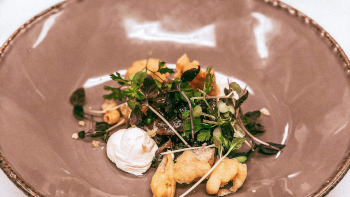
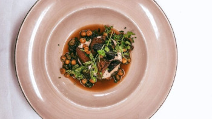
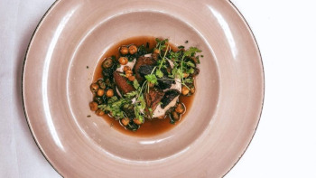
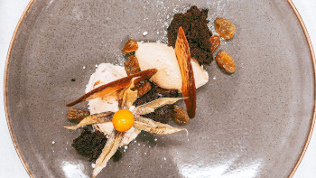
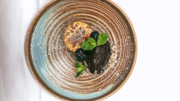
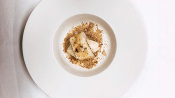
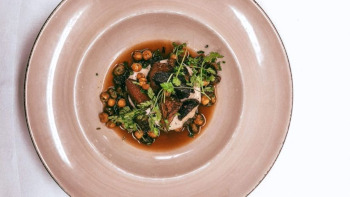

 

  
Zucchini fylld med rökt tomat, grillad paprika och fetaost serveras med svartrotspuré, sotad purjolök och
parmesanskum
14.00€
Handskalade räkor blandade med majonnäs, dill och rödlök på smörstekt toast, toppad med sikrom
14.90€
Chilistekt hummer med friterad papadums, yuzumarinerat äpple, kål, rödbetskrasse och skaldjursmajonnäs
15.00€
Gin- och enbärsgravad tartar på åländsk oxfilé med jordärtskockssoppa, rökt parmesankräm och friterad surdeg
15.50€
Ugnsbakad och friterad gulbeta, polkabeta och rödbeta serveras med tomatconsommé, rostade kikärtor och
sojabönor, krasse, sotad lökmajonnäs och röstipotatis
25.00€
Havsabborre ugnsbakad med brödcrisp och örter serveras med anjovispesto, smörkokt bellaverde och citronrostad
potatis
32.00€
Smörstekt hälleflundra med rödvinssky, picklad bränd steklök, kantareller, sidfläsk, morot, benmärgssmör och
potatispuré
36.00€
Grillad skotskt tender strip steak med jalapeñosky, granskottsvinägrett och rökt potatispuré
32.00€
Grillad åländsk oxfilé med vitlökssmör, rödvinssky, grillade grönsaker och potatisterrine
38.00€
Paj på karamelliserade äpplen från Tjudö serveras med gammeldagsvaniljglass och sorbet på Köldknäpp från Open
Water Brewery
14.50€
Knäckig vaniljparfait med rårörda blåbär, kanderade hasselnötter och blåbärssorbet
14.50€
Chokladmousse smaksatt med kola serveras med romrussinglass, chokladsockerkaka och karamellflarn
14.50€
Vi har olika smaker av hemlagad glass och sorbet, fråga gärna efter kvällens sorter (pris/kula)
4.50€
Härliga små chokladpraliner i olika smaker
2.90€/st
Såklart så kan vi alltid laga en meny som passar just ditt sällskap, vi ser gärna att grupper större än 15
beställer i förväg för att underlätta vårt kära kök.
